Module 3.
Claude Code로 익히는 바이브코딩
오늘 만드는 것들
전체 흐름여기서부터 Claude Code입니다. 기능을 줄이지 않은 원본 도구입니다.
M1
나만의 웹페이지
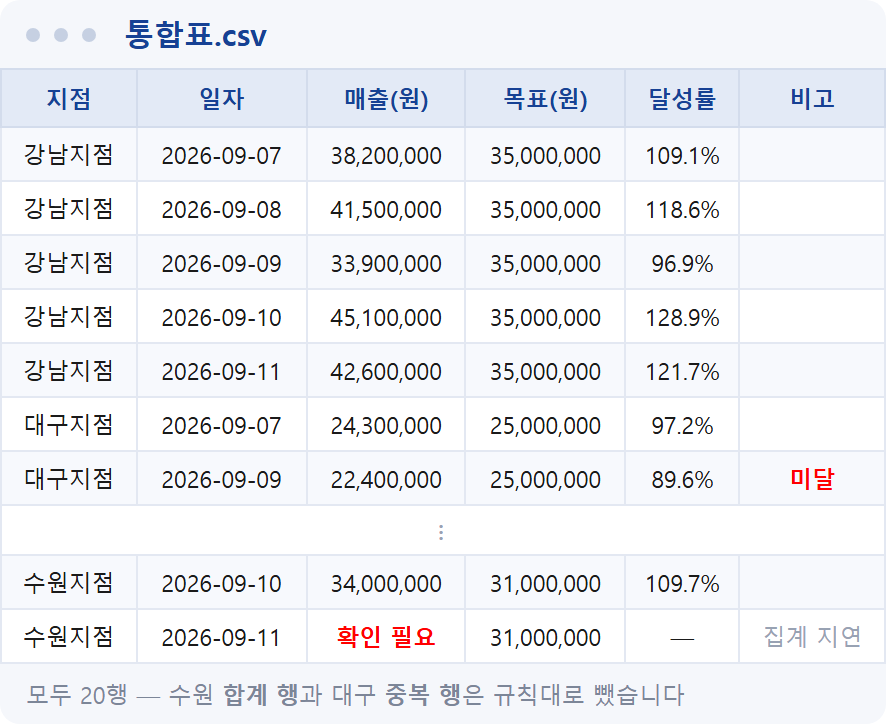
M2
주간 실적 통합표
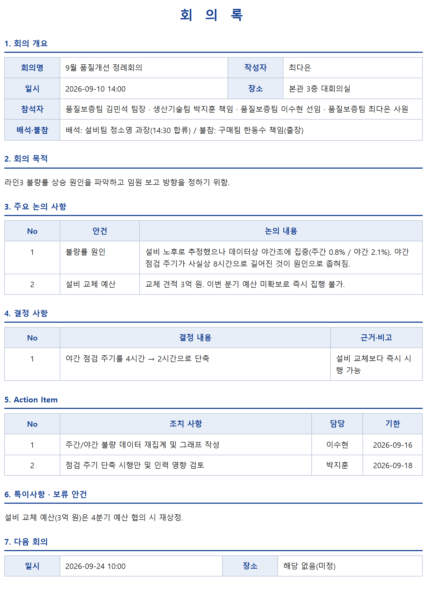
M3
회의록 PDF
지금 여기

M4
PDF 분석 대시보드
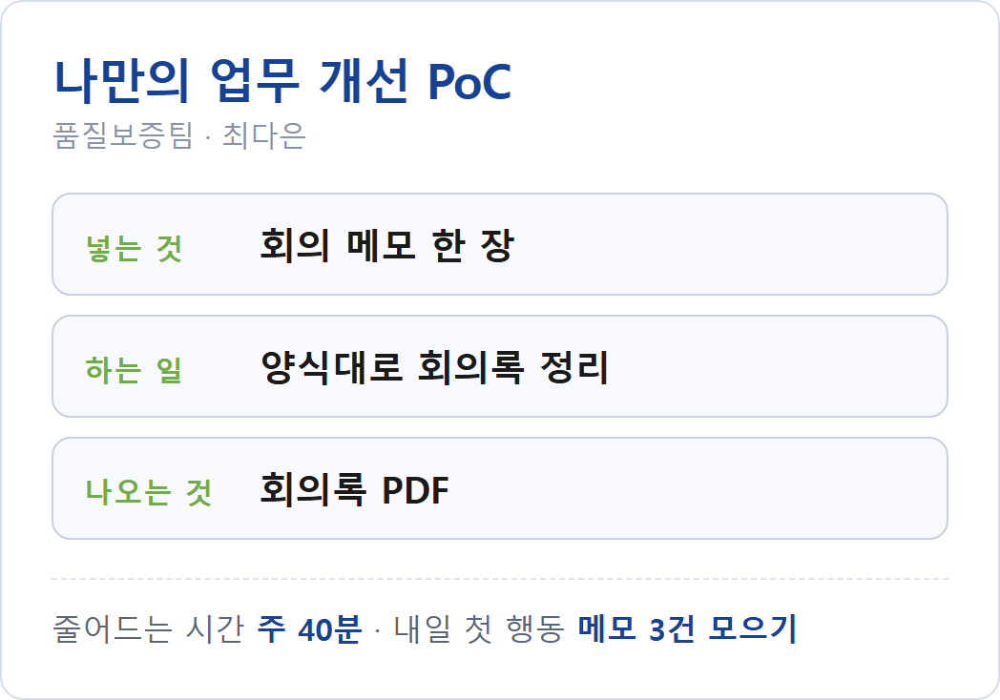
M5
아이디어 기획서 한 장
이번 시간에 만들 것
결과물 미리보기회의 중에 급하게 적은 메모 한 장을, 명령 한 줄로 회의록 PDF까지 만듭니다.
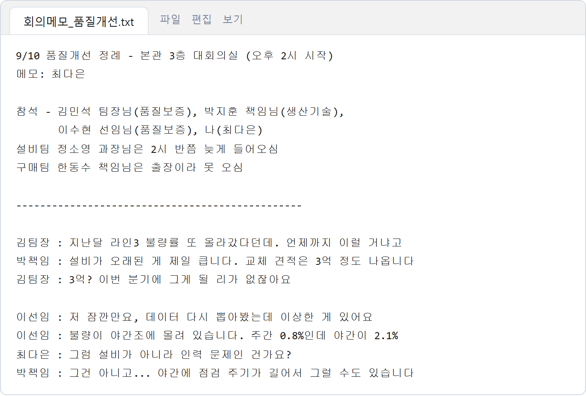
① 받은 회의 메모 — 날것 그대로
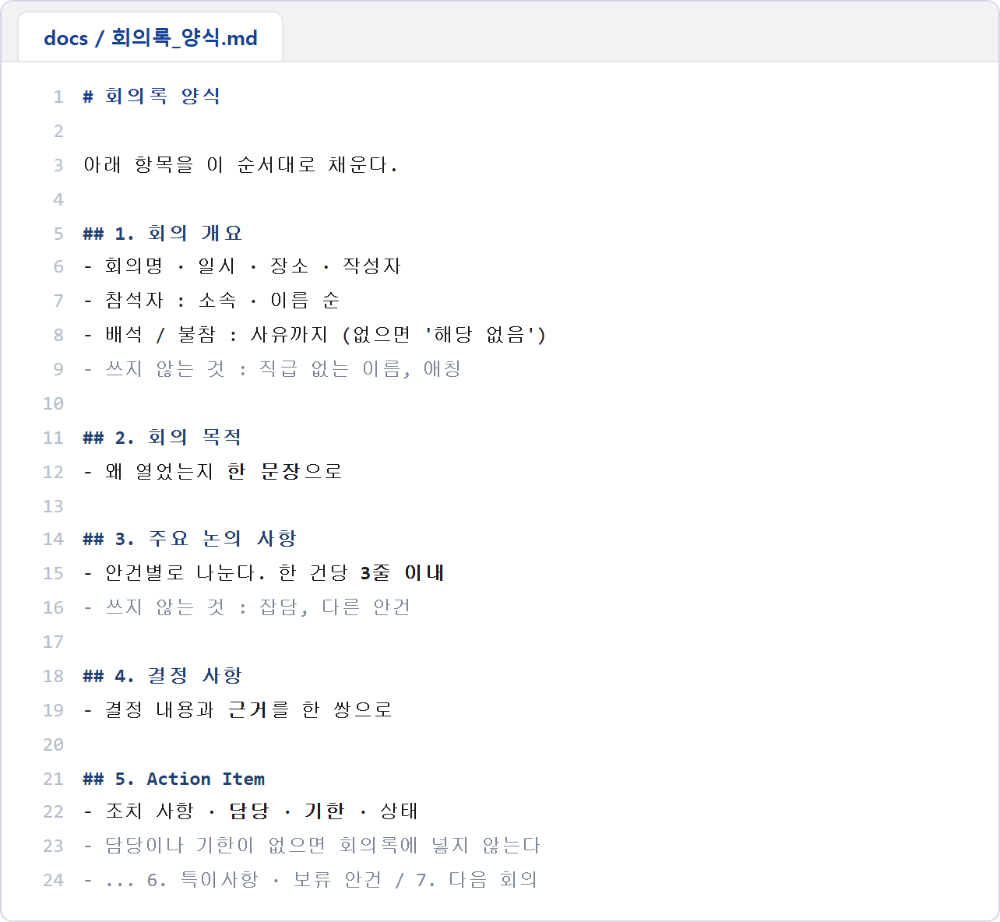
② 내가 적은 양식 지침
③ 명령 한 줄 → 회의록 PDF
CHAPTER 1
Claude Code 시작하기
작업 폴더를 열고 터미널에서 Claude Code를 띄우는 것까지 준비합니다.
- 작업 폴더
- 첫 실행
- 모델 · Effort
- 권한
클로드 코드, 준비 다들 해오셨나요?
M3 · 확인준비되신 분은 지금 실행해서 잘 되는지 확인해 주세요.
아래 순서대로 화면이 나오면 준비 끝입니다.
- 검색창에 cmd → 명령 프롬프트 열기
- claude 입력 폴더를 신뢰하겠냐고 물으면 Yes
- 안녕? 이라고 물어보기 답이 돌아오면 준비 끝입니다
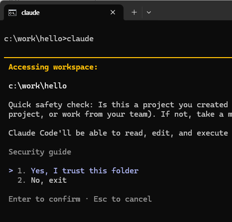
폴더를 물으면 Yes, I trust this folder
왜 Claude Code를 써야 하나?
M3-1 · 개념둘 다 말로 만드는 방식은 같습니다. 어디까지 갈 수 있느냐가 다릅니다.
H Chat 데스크탑
- 오늘 배울 기능 중 일부만 쓸 수 있다
- 가볍게 만들어 보기에 좋다
Claude Code
- 지침 · 분담 · 레시피를 직접 만든다
- 업무용 도구를 만들기에 좋다
오늘 쓸 작업대는 두 개뿐입니다
M3-1 · 개념프로그램을 새로 배우지 않습니다. 자리 배치만 익히면 됩니다.
VS Code는 코딩용이 아니라 문서를 열어 보는 편집기로만 씁니다.
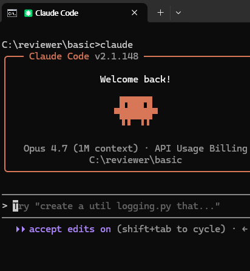
명령 프롬프트 + Claude Code
일을 시키는 곳
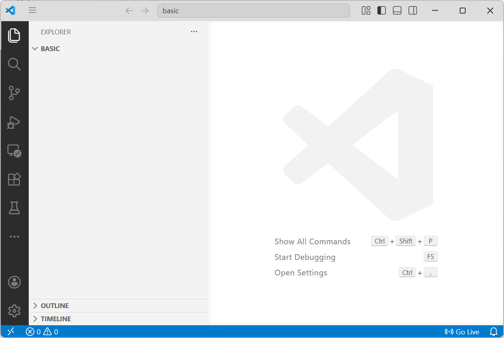
VS Code
만들어진 문서를 확인하는 곳
[실습] 받은 폴더를 자리에 놓고 시작합니다
M3-1 · 실습- 폴더를 만듭니다 C:\work\basic
- 강의자료와 함께 받은 회의메모 3개를 그 안에 넣습니다회의 중에 급하게 적은 자료입니다. 오늘 이것을 회의록으로 만듭니다 — 받는 파일은 이 셋뿐입니다
- 탐색기 주소창에 code . 을 입력해 VS Code로 엽니다점 하나까지 그대로 — “지금 이 폴더를 VS Code로 열어라”라는 뜻입니다
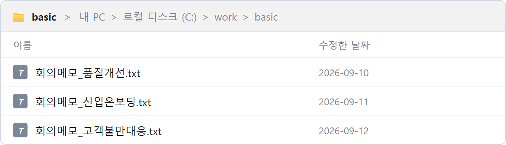
이 상태가 되면 준비 끝 — 메모 3개
터미널 열기 · 복사 붙여넣기
M3-1 · 준비터미널은 AI에게 말을 거는 창입니다. 그 이상은 몰라도 됩니다.
- VS Code에서 Ctrl + ` 누르기 백틱 ` 키 — ESC 키 바로 아래에 있습니다
- 아래쪽에 검은 창이 열리면 준비 끝
- 여러 개를 띄워 나눠 시킬 수도 있습니다
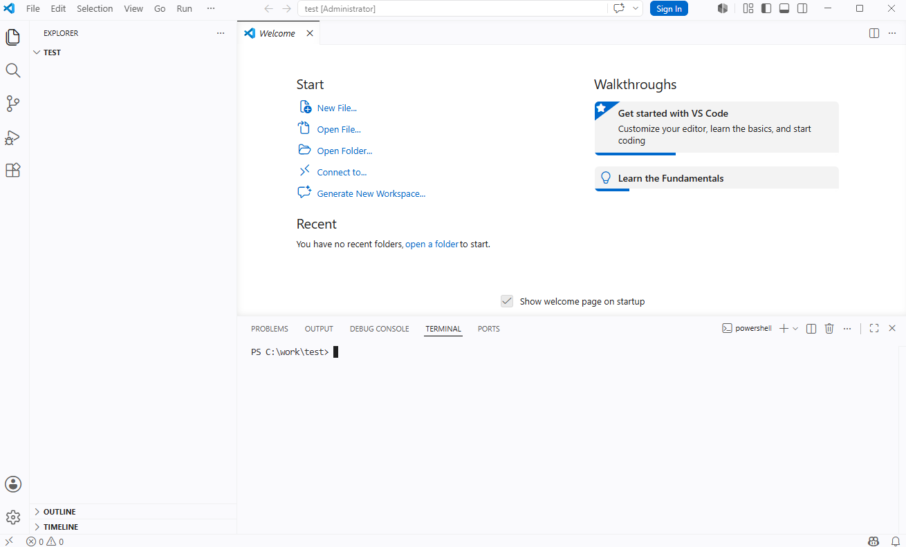
아래쪽에 열리는 검은 창이 터미널입니다
Claude Code 첫 실행
M3-1 · 준비- 터미널에 claude 입력
- “이 폴더에서 작업해도 되나” 물으면 Yes AI가 마음대로 고쳐도 되는 폴더인지 확인하는 질문입니다
- 화면 색(테마) 고르기 중요하지 않습니다. 나중에 /theme 로 바꿉니다
- 환영 화면에 지금 폴더 경로가 보이면 성공
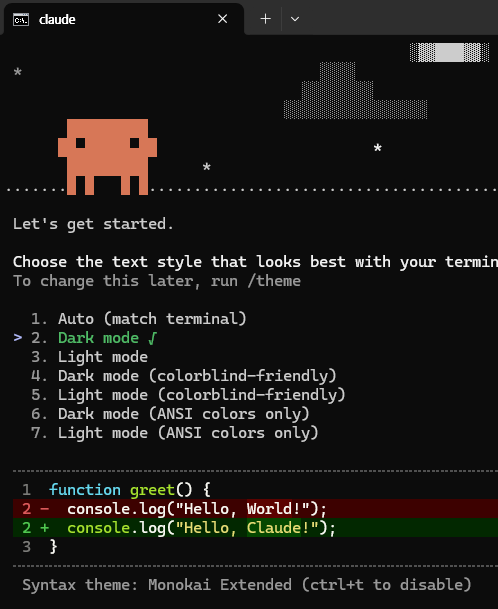
첫 실행에서 한 번만 물어봅니다
모델과 Effort 고르기
M3-1 · 준비M1에서 고른 두뇌, M2에서 본 공들이는 정도 — 여기서도 똑같습니다.
터미널에 슬래시(/)로 시작하는 한 단어를 넣으면 고르는 창이 열립니다.
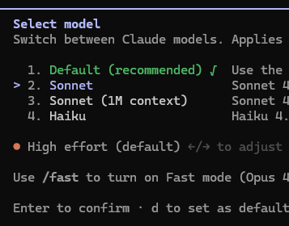
/model — 목록에서 Sonnet
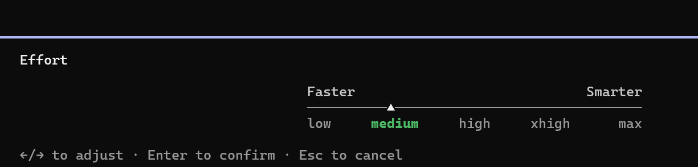
/effort — 실습은 medium 으로
권한 — 매번 물어보지 않게
M3-1 · 준비기본값은 파일을 고칠 때마다 “고쳐도 될까요?” 하고 묻습니다.
- /config 입력
- per 라고 쳐서 permission mode 찾기
- 방향키로 옮긴 뒤 Tab 을 눌러 Auto 로
- ESC 를 누르면 저장되고 원래 화면으로
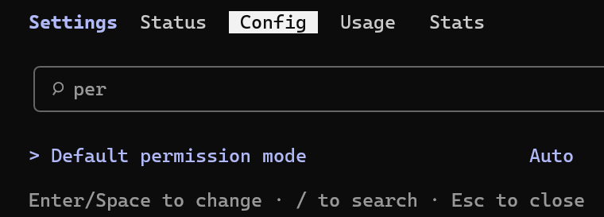
Default permission mode → Auto
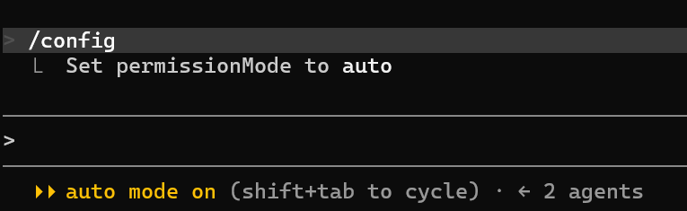
아래에 auto mode on 이 뜨면 완료
CHAPTER 2
오늘 만들 것 — 회의 메모
회의 중에 적은 메모 한 장이 회의록 PDF가 되기까지를 그려 봅니다.
- 회의 메모
- 회의록 PDF
오늘 만들 것 — 메모 한 장에서 회의록 PDF까지
M3-2 · 개념양식 파일은 받지 않습니다. 양식이 어떤 것인지를 내가 문서로 적어 둡니다.
- 회의록에 들어갈 항목과 규칙을 문서로 적는다
- 받은 회의 메모를 읽는다
- 잡담을 걷어내고 그 문서대로 정리한다
- 마지막엔 명령 한 줄로 PDF까지
마지막에 나오는 회의록 PDF
재료 — 회의 중에 적은 메모 한 장
M3-2 · 개념정리된 글이 아닙니다. 받아 적은 그대로입니다 — 우리가 실제로 남기는 메모처럼.
이 안에 들어 있는 것
참석자 · 지각 · 불참 / 오간 의견 / 결정된 것 / 누가 언제까지 할 것인가
같이 섞여 있는 것
잡담과 다른 안건 — 회의록에는 들어가면 안 되는 것들
주의
메모에 없는 내용은 지어내면 안 됩니다. 비어 있으면 비어 있는 대로 둡니다.
CHAPTER 3
토큰과 사용료
AI를 쓰면 무엇을 기준으로 요금이 나가는지 알아 둡니다.
- 토큰
- 입력 · 출력
- 사용료
AI 사용료는 ‘토큰’으로 나갑니다
M3-3 · 개념AI를 쓰면 주고받은 글의 양만큼 사용료가 나갑니다.
그 양을 세는 단위가 토큰입니다.
한글
한 글자가 1 토큰
‘회의록’ → 3 토큰
영어
한 단어가 1 토큰
report · meeting → 각각 1 토큰
| 무엇에 | 100만 토큰당 |
|---|---|
| 내가 넣는 글 (입력) | $3 — 프롬프트 · 붙여넣은 자료 |
| Agent가 쓰는 글 (출력) | $15 — 답변 · 만들어 준 문서 (입력의 5배) |
CHAPTER 4
CLAUDE.md — 항상 적용되는 기준
매번 설명하지 않도록, 공통 기준을 문서 한 장에 적어 둡니다.
- 목적
- 참석자 · 용어
- 규칙
- 책상과 캐비닛
왜 CLAUDE.md를 써야 하나요?
M3-4 · 개념대화가 길어지면 처음에 한 말일수록 흐려집니다.
CLAUDE.md는 그때에도 기준을 잡아 주는 파일입니다.
원리
항상 앞에 붙는다
무엇을 묻든 이 파일이 내 질문 앞에 자동으로 얹혀 전달된다
한계
바구니는 찬다
앞의 대화는 덜 보게 되고, 가득 차면 요약되며 뭉개진다
그래서
기준은 남는다
앞의 대화가 흐려져도 이 파일은 매번 다시 붙는다
지침은 왜 md 파일에 적을까
M3-4 · 개념M2에서 폴더 지침으로 저장한 것도 사실 CLAUDE.md 파일이었습니다. 워드가 아니라 md 파일인 데는 이유가 있습니다.
워드 · 한글 — 무겁다
글자 말고도 서식 · 표 · 이미지 · 글꼴이 한 상자에 압축되어 들어 있습니다.
메모장으로 열면 PK… 같은 알 수 없는 기호만 보입니다.
먼저 풀어야 글자가 나온다
txt · md — 가볍다
파일 안이 적힌 글자 그대로입니다. 메모장으로 열어도 전부 보입니다.
기호 몇 개가 전부 — # 제목 · - 목록 · **강조**
푸는 단계 없이 바로 읽힌다
CLAUDE.md 만들기 — 목적부터 적습니다
M3-4 · 개념① 빈 파일부터 만들기
CLAUDE.md를 루트폴더에 하나 만들고, 빈 파일로 만들어줘.
② 이 프로젝트의 목적 적기
CLAUDE.md에 아래 목적을 적어줘.
1) 회의 중에 급하게 적은 메모를 읽고, 안건·결정·할 일을 가려낸다.
2) 그 내용을 docs/회의록_양식.md 에 적힌 항목과 순서대로 정리해 회의록을 만든다.
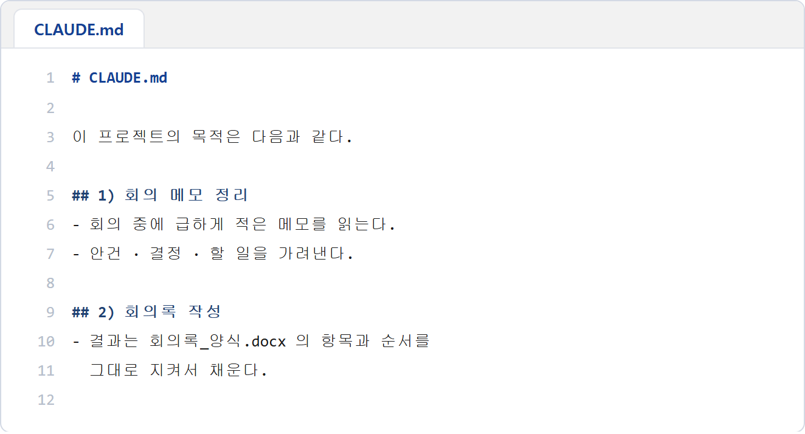
VS Code로 열어 내용이 들어갔는지 확인합니다
참석자와 부서 용어를 적습니다
M3-4 · 개념회의메모_품질개선.txt 에 나오는 사람들의
이름·소속·역할을 CLAUDE.md에 정리해줘.
라인3, 야간조, 정례처럼 우리 부서에서만 쓰는 말도
뜻과 함께 적어줘.
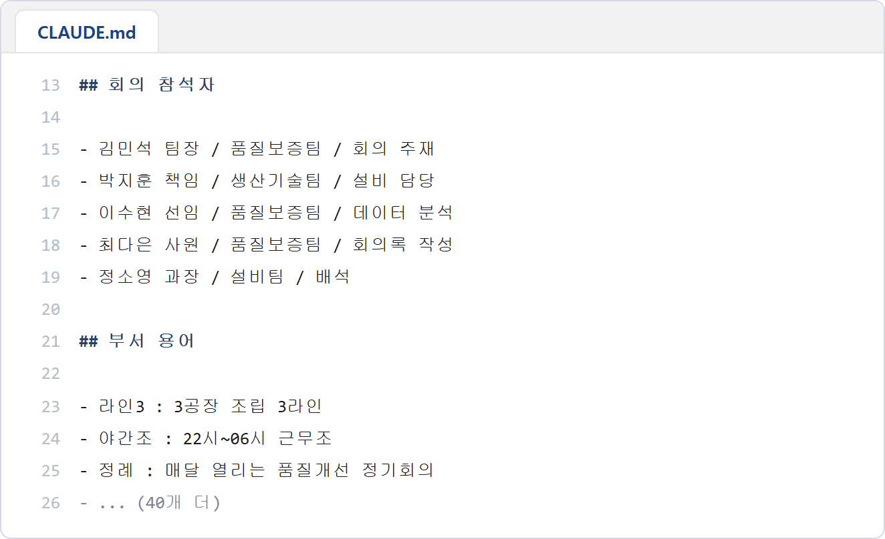
참석자와 용어가 문서로 정리됩니다
지켜야 할 규칙을 더합니다
M3-4 · 개념회의록을 쓸 때 지킬 규칙을 CLAUDE.md에 더 적어줘.
· 논의 내용은 한 건당 3줄을 넘기지 않게
· Action Item에는 담당자와 기한을 반드시
· 메모에 없는 내용은 지어내지 말고 '해당 없음'으로
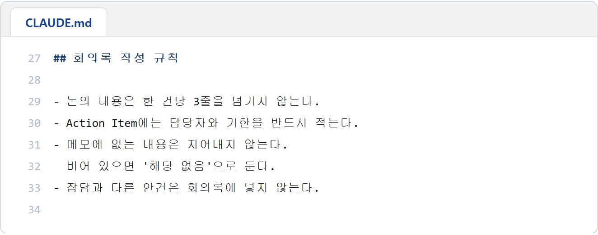
규칙이 문서에 쌓입니다
무엇이 남는가
말로 부탁하던 조건이 지켜지는 기준이 됩니다.
[실습] CLAUDE.md 완성하기
M3-4 · 실습앞에서 본 네 가지를 순서대로 넣어 내 CLAUDE.md 한 개를 완성합니다.
- 빈 CLAUDE.md 만들기 작업 폴더 맨 위에 한 개
- 프로젝트 목적 적기 메모 읽기 · 양식대로 회의록 만들기
- 참석자와 부서 용어 적기 이름 · 소속 · 역할 / 라인3 · 야간조 · 정례
- 회의록 작성 규칙 더하기 3줄 이내 · 담당과 기한 · 지어내지 않기
왜 하는가
매번 다시 설명하던 것을 파일 하나에 모아 둡니다.
무엇이 남는가
폴더 맨 위에 남는 CLAUDE.md — 이후 실습이 전부 이 파일을 기준으로 움직입니다.
정답은 — 참석자와 용어입니다
M3-4 · 개념CLAUDE.md는 모든 질문 앞에 매번 붙습니다.
그래서 여기가 무거워지면 정작 내 질문이 묻힙니다.
CHAPTER 5
양식 문서와 회의록 정리
자주 바뀌는 내용은 밖으로 빼고, 양식을 문서로 적어 메모를 회의록으로 정리합니다.
- 내용은 밖으로
- 양식 지침
- 회의록 정리
- /btw
자주 바뀔 내용은 따로 뺍니다
M3-5 · 개념① 담아 둘 파일 먼저 만들기
docs 폴더를 만들고, 그 안에 참석자.md 와 용어집.md 를
빈 파일로 만들어줘.
② 내용 옮기기
CLAUDE.md에 있는 참석자와 용어를 docs의 두 파일로 옮기고,
CLAUDE.md에는 어떤 파일이 있는지만 남겨줘.
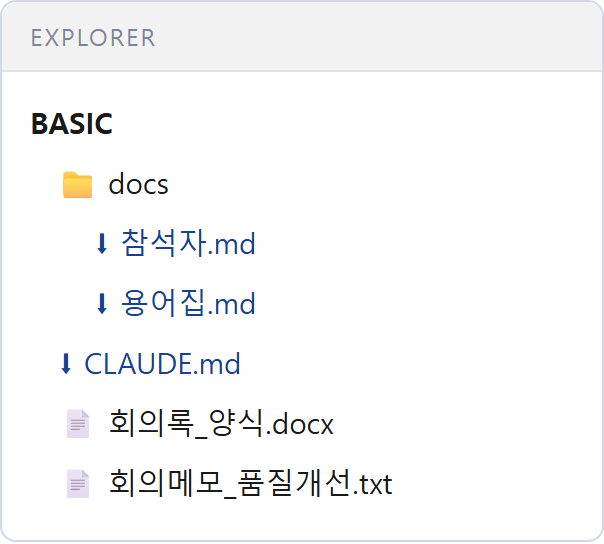
내용이 파일로 나뉩니다
왜 나누는가
자주 바뀌는 것은 밖으로. CLAUDE.md에는 안 바뀌는 것만 남깁니다.
책상과 캐비닛 — 내용은 밖에, 경로만 안에
M3-5 · 개념CLAUDE.md에는 어디에 있는지만 적고, 내용은 docs 폴더에 둡니다.
책상 위에는 쪽지만 두고, 서류는 캐비닛에 넣어 두는 것과 같습니다.
양식을 파일이 아니라 문서로 적습니다
M3-5 · 개념docs/회의록_양식.md 를 만들어줘. 회의록에 들어갈 항목과 순서를 적는 문서야.
1. 회의 개요 — 회의명 · 일시 · 장소 · 작성자 · 참석자 · 배석/불참
2. 회의 목적 — 한 문장
3. 주요 논의 사항 — 안건별로, 한 건당 3줄 이내
4. 결정 사항 — 결정 내용과 근거
5. Action Item — 조치 사항 · 담당 · 기한 · 상태
6. 특이사항·보류 안건 7. 다음 회의
항목마다 무엇을 쓰는지와 쓰지 않는 것을 한 줄씩 덧붙여줘.
양식이 읽을 수 있는 글로 남습니다
왜 파일이 아니라 글인가
워드 양식은 칸만 있습니다. 글로 적으면 ‘왜 그렇게 쓰는지’까지 지켜집니다.
[실습] 메모를 회의록으로 정리합니다
M3-5 · 실습회의메모_품질개선.txt 를 읽고,
docs/회의록_양식.md 에 적힌 항목과 순서 그대로 회의록을 정리해줘.
CLAUDE.md에 적은 규칙을 지키고,
메모에 없는 내용은 해당 없음으로 둬.
다 되면 어느 칸을 무엇으로 채웠는지 알려줘.
이 내용이 나오면 성공 — PDF는 다음 단계에서
[실습] 내 업무 자료를 문서로 만듭니다
M3-5 · 실습지금까지 한 방식 그대로, 이번에는 내 업무 자료를 문서로 만들어 둡니다.
업무 용어집
우리 팀에서만 쓰는 말과 줄임말
매번 풀어서 설명하던 것
보고서 기준
형식 · 톤 · 쓰지 않는 표현
초안 품질이 고르게 나온다
업무 분장
누가 무엇을 맡는지
담당자를 매번 알려주지 않아도
자주 쓰는 문구
인사말 · 마무리 문장
복사해 두던 것을 한곳에
- 위에서 하나 고르기
- docs 폴더에 파일을 만들고 내용 채우기
- CLAUDE.md에 경로와 한 줄 설명 남기기
무엇이 남는가
내 업무용 docs 폴더와, 어디에 무엇이 있는지 적힌 CLAUDE.md
잠깐 물어보기 — /btw
M3 · 참고작업 중에 궁금한 걸 물으면 그 이야기도 바구니에 쌓입니다.
/btw 로 물으면 답만 듣고 대화에는 남지 않습니다.
그냥 물어보면
- 질문과 답이 대화에 그대로 남는다
- 바구니가 그만큼 더 찬다
/btw 로 물어보면
- 답은 듣고 대화에는 남지 않는다
- 하던 일이 흐트러지지 않는다
곁다리로 물어볼 때
/btw 방금 만든 CLAUDE.md는 어느 폴더에 저장됐어?
CHAPTER 6
Skill — 반복업무 레시피
자주 쓰는 지시를 명령 한 줄로 묶습니다.
- /회의록작성
- 공유
Skill — 자주 쓰는 지시를 명령으로
M3-6 · 개념매번 길게 설명하던 것을 명령 하나로 만들어 둘 수 있습니다.
요리책의 레시피처럼, 필요할 때 이름만 부르면 됩니다.
반복하는 프롬프트를 명령으로
늘 쓰는 긴 지시문을 이름 하나로
주간보고 정리 · 메일 초안 만들기
도구를 쓰는 명령으로
파일 편집 · 검색까지 묶어서 실행
문서를 읽어 표로 정리해 저장까지
[실습] 나만의 Skill을 만들고 써 봅니다
M3-6 · 실습메모 파일 이름만 넣으면 회의록 PDF가 나오는 명령을 만듭니다.
① 스킬 만들기
회의록작성 스킬을 이 프로젝트에서만 쓰도록 만들어줘.
뒤에 회의메모 파일 이름을 적으면 그 메모를 읽고,
docs/회의록_양식.md 와 CLAUDE.md 의 규칙을 지켜 정리해줘.
정리한 내용을 회의록_(메모이름).html 로 만들고,
이미 깔려 있는 엣지(msedge.exe)를 headless 로 인쇄해서
회의록_(메모이름).pdf 까지 만들어줘.
파이썬이나 새로 설치하는 프로그램은 쓰지 마.
.claude/skills/회의록작성/SKILL.md 파일로 만들어줘.
② 스킬 인식시키기
/reload-skills
③ 목록에 있는지 확인
/skills
④ 다른 메모로 실행
/회의록작성 회의메모_신입온보딩
이어서 — 내 업무로
docs/회의록_양식.md 만 우리 팀 양식으로 고치면 내 업무용이 됩니다.
[공유] 만든 문서를 올리고, 서로 봅니다
M3-6 · 공유- hyundai.mincoding.co.kr 강의장 접속
- 상단 [질문있어요] 메뉴 클릭
- 공지글 열기
- 댓글 작성창의 파일 업로드로 방금 만든 문서를 첨부하고, 어떤 스킬로 만들었는지 한 줄 쓴 뒤 [입력]
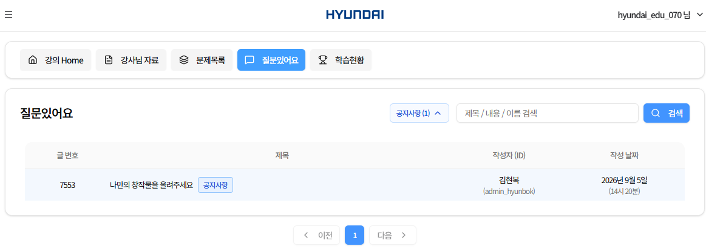
②③ 질문있어요 > 공지글 열기
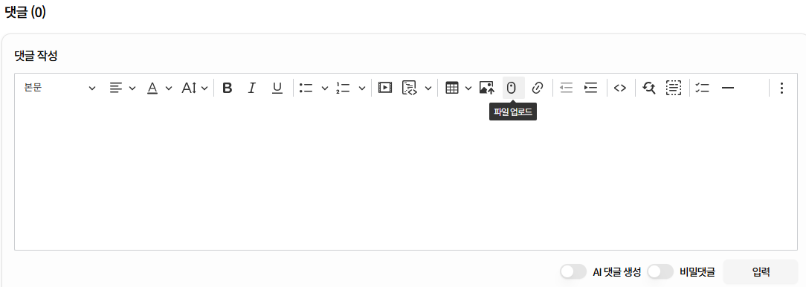
④ 댓글 작성창 > 파일 업로드
M3 정리
M3 · 정리오늘 익힌 것은 기능이 아니라 일을 맡기는 방식입니다.
감사합니다.
이어서 M4. 데이터 시각화 · AI 업무도구 만들기